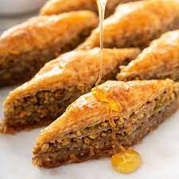

Baklava

Many ethnic festivals are held in my city throughout the year. One in May is the Greek Hellenic Festival. My family enjoys baklava—a traditional walnut strudel. Once you learn how to make baklava, you'll see it's not difficult. Even working with phyllo is easier than you'd expect. Just have your ingredients ready to go and follow the directions on the package. The results are scrumptious and well worth the effort. —Judy Losecco, Buffalo, New York
Ingredients
- 1-1/2 pounds finely chopped walnuts
- 1/2 cup sugar
- 1/2 teaspoon ground cinnamon
- 1/8 teaspoon ground cloves
- 2 packages (16 ounces each, 14x9-inch sheet size) frozen phyllo dough, thawed
Ingredients for Syrup
- 2 cups sugar
- 2 cups water
- 1 cup honey
- 1 tablespoon grated lemon or orange zest
Directions
- In a small bowl, combine the walnuts, sugar, cinnamon and cloves; set aside. Brush a 15x10x1-in. baking pan with some of the butter. Unroll 1 package phyllo dough; cut stack into a 10-1/2x9-in. rectangle. Repeat with remaining phyllo. Discard scraps.
- Line bottom of prepared pan with 2 sheets of phyllo dough (sheets will overlap slightly). Brush with butter. Repeat layers 14 times. (Keep dough covered with a damp towel until ready to use to prevent sheets from drying out.)
- Spread with 2 cups walnut mixture. Top with 5 layers of phyllo dough, brushing with butter between each sheet. Spread with remaining walnut mixture. Top with 1 layer of phyllo dough; brush with butter. Repeat 14 times. Cut into 2-1/2-in. squares; cut each square in half diagonally. Brush remaining butter over top. Bake at 350° for 40-45 minutes or until golden brown.
- In a large saucepan, bring syrup ingredients to a boil. Reduce heat; simmer for 10 minutes. Strain and discard zest; cool to lukewarm. Pour syrup over warm baklava.